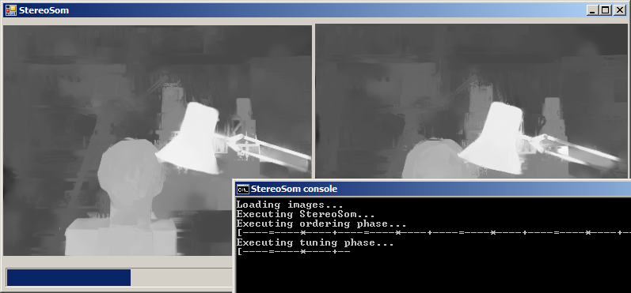

StereoSOM - Open source algorithm for dense two-frame stereo matching by self-organizing neural networks
Home pageStereoSOM source code and binaries
- Zip compressed archive
- Screenshot of the program

Before using StereoSOM, please read the readme.txt and license.txt files in the archive.